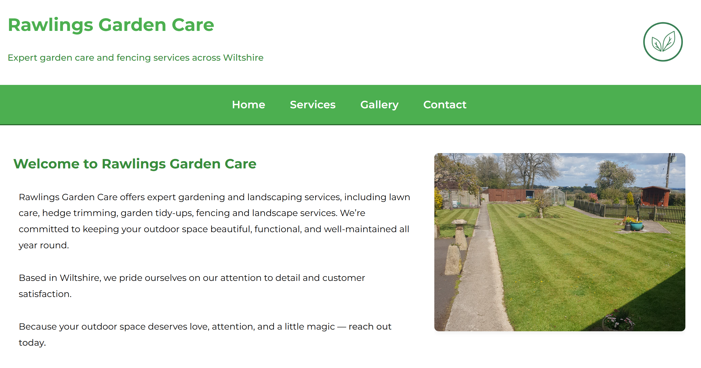

Rawlings Garden Care
▽
Project overview
Rawlings Garden Care needed a digital presence that reflected their reliability, professionalism, and local charm. The goal: a responsive site that converts casual browsers into loyal clients, while feeling approachable and grounded.
My role
I led the front-end implementation, SEO tuning, and conversion strategy. The design emphasizes clarity, warmth, and accessibility—no frills, just thoughtful UX.
Process Highlights
- Responsive layout tailored to mobile-first users
- SEO optimization for seasonal and local search terms
- Strategic CTA placement to guide user flow
- Calming color palette and soft textures to evoke trust
Challenges and Solutions
Balancing simplicity with conversion: the site needed to feel clean and approachable, but still guide users toward booking services or making inquiries.
Solution: I introduced subtle hover effects and micro-interactions to keep the experience engaging without overwhelming. These cues help users navigate confidently, reinforcing trust while supporting clear calls to action.
Tools
HTML, CSS, JavaScript